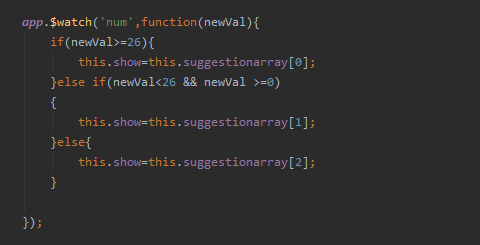

数据变化的监控经常使用，我们可以先来看一个简单的数据变化监控的例子。 例如天气预报的穿衣指数，它主要是根据温度来进行提示的，当然还有其它的，咱们就不考虑了。
温度大于26度时，我们建议穿T恤短袖，温度小于26度大于0度时，我们建议穿夹克长裙，温度小于0度时我们建议穿棉衣羽绒服。
先来模拟一个温度变化的情况：我们使用按钮来加减温度。
示例： 当前的室外温度为：{{temperature}}℃ 穿衣建议：{{suggestion}}
有些时候我们会用实例属性的形式来写watch监控。 也就是把我们watch写在构造器的外部，这样的好处就是降低我们程序的耦合度，使程序变的灵活。写法：app.$watch('xxx',function(){})
示例： 当前的室外温度为：{{num}}℃ 穿衣建议：{{show}}